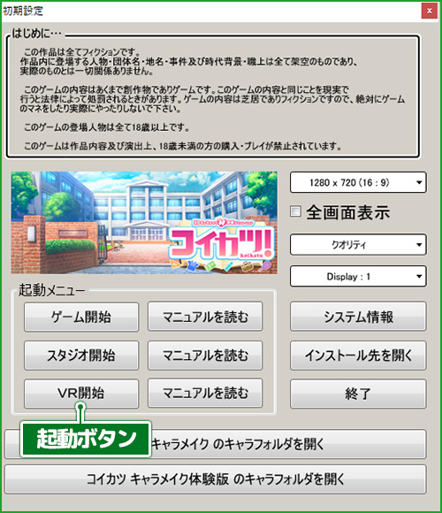
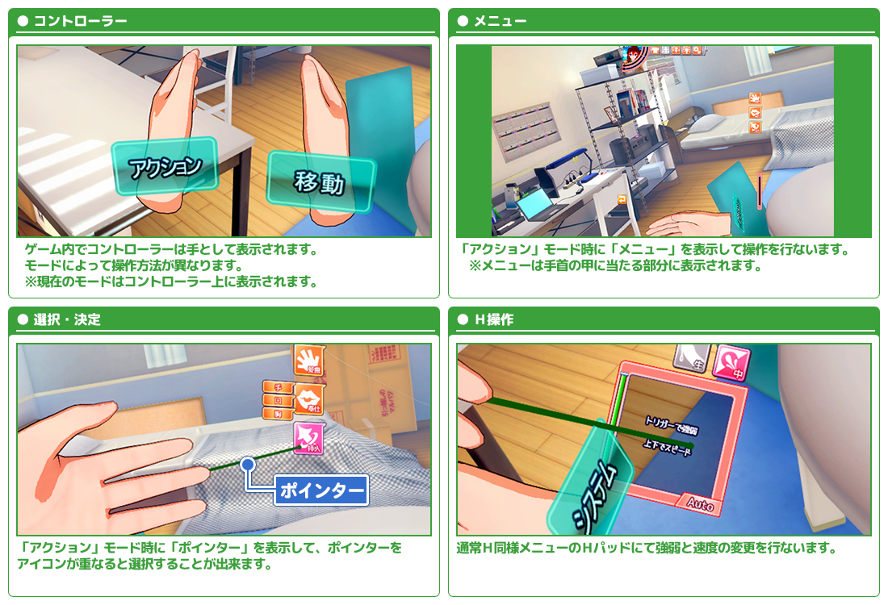
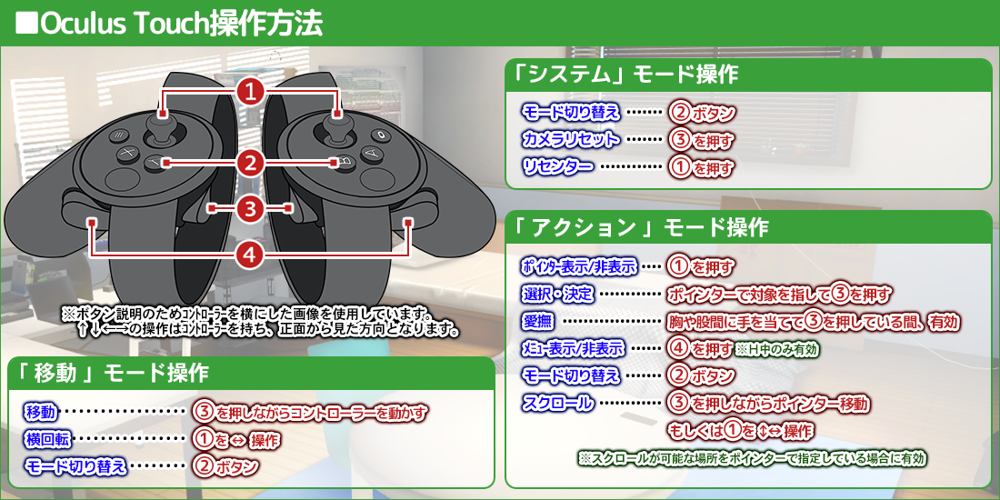
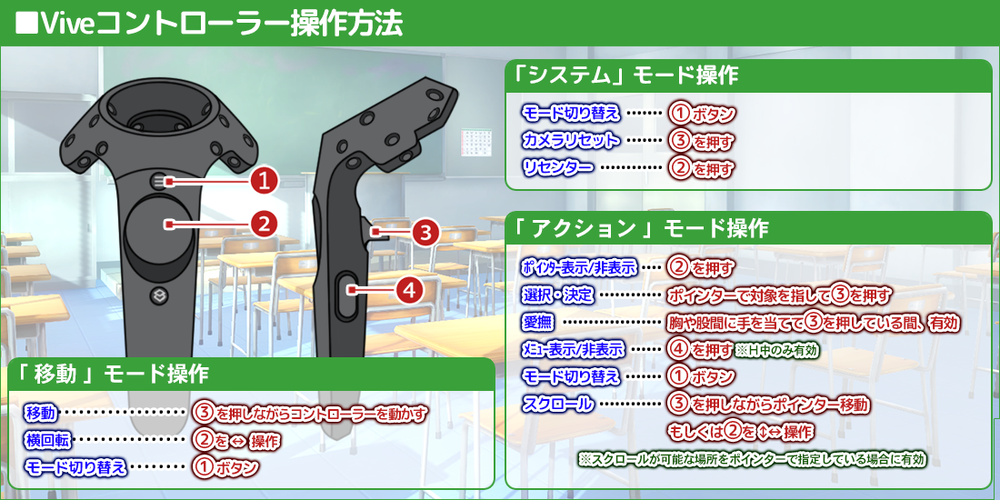

////////////////////////////////////////////////////////////////////////////////////////////////////////////////////////////////////
「 コイカツ！ ＶＲ 」 Copyright (C) ILLUSION
////////////////////////////////////////////////////////////////////////////////////////////////////////////////////////////////////
「 コイカツ！ ＶＲ 」 Copyright (C) ILLUSION
////////////////////////////////////////////////////////////////////////////////////////////////////////////////////////////////////
はじめに
● この度は「 コイカツ！ ＶＲ 」をダウンロードして頂き、誠にありがとう御座います。
本プログラムはＶＲヘッドマウントディスプレイ「 Oculus Rift 」もしくは「 HTC Vive 」で「 コイカツ！ 」のフリーＨシーンをプレイする事が出来るプログラムとなります。
※基本的な流れはゲーム本編のフリーＨと同じになります。 詳しくは本編のマニュアル: フリーＨを御覧下さい。
※ゲーム本編のフリーＨで選択できない体位・行為は選択できません。
● 本プログラムをプレイするには以下のソフト・ハードが必要となります。
・「 コイカツ！ 」のインストール ・「 Oculus Rift CV1 」もしくは「 HTC Vive 」 ・「 ＶＲコントローラー 」 ・1280*720以上の解像度
・ＶＲに対応したパソコン ※Oculus Rift CV1に対応したパソコン環境 HTC Viveに対応したパソコン環境
※「 Oculus Touch 」「 Vive コントローラー 」を総じて「ＶＲコントローラー」と表記している場合があります。
本プログラムはＶＲヘッドマウントディスプレイ「 Oculus Rift 」もしくは「 HTC Vive 」で「 コイカツ！ 」のフリーＨシーンをプレイする事が出来るプログラムとなります。
※基本的な流れはゲーム本編のフリーＨと同じになります。 詳しくは本編のマニュアル: フリーＨを御覧下さい。
※ゲーム本編のフリーＨで選択できない体位・行為は選択できません。
● 本プログラムをプレイするには以下のソフト・ハードが必要となります。
・「 コイカツ！ 」のインストール ・「 Oculus Rift CV1 」もしくは「 HTC Vive 」 ・「 ＶＲコントローラー 」 ・1280*720以上の解像度
・ＶＲに対応したパソコン ※Oculus Rift CV1に対応したパソコン環境 HTC Viveに対応したパソコン環境
※「 Oculus Touch 」「 Vive コントローラー 」を総じて「ＶＲコントローラー」と表記している場合があります。
利用規約、使用上の注意
プレイする前に必ずお読み下さい。
ハードディスク中にあるデータ及びプログラムなどはバックアップをし、良識的な行動に努めて下さい。
●この作品はすべてフィクションです。
作品内に登場する人物・団体名・地名・商品名・事件及び時代背景・職業は全て架空のものであり、実際のものとは一切関係ありません。
また、このゲームは作品内容及び演出上18歳未満の方の購入・プレイが禁止されています。
登場人物は全て18歳以上です。
また、インターネットでのファイル共有やアップロード、レンタル業務、及びそれに類する行為での使用は一切認めておりません。
●動画配信、並びにスクリーンショット等の二次利用は禁止とさせて頂きます。
●本作品には暴力的、残酷的なシーン、犯罪にあたる行為等、過激な表現が含まれております。絶対に真似をしないで下さい。
作品内での行動は同意の上の演技でありフィクションです。 この作品の内容と同じ事を現実に行うと法律によって処罰される場合があります。
●長時間プレイする場合は、健康のため1～2時間ごとに10～15分程度の小休止をして下さい。
以前テレビを見ていて、または強い刺激を受けたときに一時的に筋肉の痙攣や意識の喪失などを経験した方は、ゲームを始める前に医師と相談して下さい。
ゲームのプレイ中にそのような症状が起きた場合は、直ちにゲームを止め、医師の診断を受けて下さい。
また、めまいや吐き気などの症状がでた場合にはすぐにプレイをおやめください。
● ＶＲヘッドマウントディスプレイの長時間使用は健康に影響を与える可能性があります。
適度に休憩を挟んでお楽しみ下さい。
●「 コイカツ！ＶＲ 」は、コイカツ！の初期設定画面から起動して下さい。
※ＶＲヘッドマウントディスプレイは、ゲームを起動したら装着して下さい。
■ Oculus Riftの場合
・「 Oculus Home 」等のソフトウェアは可能な限り最新版をインストールして下さい。
また、「 Oculus Home 」の「 setting 」の「 General 」の項目の「 Unknown Sources 」を許可してください。
・Oculus Riftでも「 Steam VR 」が必要となります。 Steam VRの導入につきましては「 Steam 」にお問い合わせ下さい。
・起動時には「 Oculus Home 」→「 Steam VR 」→「 コイカツ！ＶＲ 」の順に起動して下さい。
・ゲーム実行時にOculusの画面にHealth and Safety Warningと表示された場合はコントローラーのAボタンを押すか、一番下の
Press the Xbox A-button or remote select button,or hover on this text for two seconds to acknowledge. と表示された文章を２秒間視線で選択してください。
■ HTC Viveの場合
・HTC Viveでより良いトラッキング結果を得る為には、ベースステーション（トラッキングカメラ）の設置数に合わせて、ベースステーションモードを設定してください。
※ベースステーションを１つ設置している場合はＡモードを設定してください。
※ベースステーションを２つ設置している場合はそれぞれをＢ・Ｃモードへ設定してください。
・「 コイカツ！ＶＲ 」を起動する前に「 Steam VR 」を起動する必要があります。
！免責事項！
●本ソフトウェアを使用する事で発生したトラブルや損失、損害に対して、当社は一切責任を負いません。また、動作保証は致しません。ハードディスク中にあるデータ及びプログラムなどはバックアップをし、良識的な行動に努めて下さい。
●この作品はすべてフィクションです。
作品内に登場する人物・団体名・地名・商品名・事件及び時代背景・職業は全て架空のものであり、実際のものとは一切関係ありません。
また、このゲームは作品内容及び演出上18歳未満の方の購入・プレイが禁止されています。
登場人物は全て18歳以上です。
！禁止事項！
●このプログラム、データ及びマニュアルの一部または全部を無断で複製や改造する行為は、法律によって禁止されています。また、インターネットでのファイル共有やアップロード、レンタル業務、及びそれに類する行為での使用は一切認めておりません。
●動画配信、並びにスクリーンショット等の二次利用は禁止とさせて頂きます。
●本作品には暴力的、残酷的なシーン、犯罪にあたる行為等、過激な表現が含まれております。絶対に真似をしないで下さい。
作品内での行動は同意の上の演技でありフィクションです。 この作品の内容と同じ事を現実に行うと法律によって処罰される場合があります。
！注意！
●モニターに近づき過ぎないように注意して下さい。●長時間プレイする場合は、健康のため1～2時間ごとに10～15分程度の小休止をして下さい。
！警告！
●疲れているときのプレイや連続した長時間のプレイは健康上好ましくありませんので避けて下さい。以前テレビを見ていて、または強い刺激を受けたときに一時的に筋肉の痙攣や意識の喪失などを経験した方は、ゲームを始める前に医師と相談して下さい。
ゲームのプレイ中にそのような症状が起きた場合は、直ちにゲームを止め、医師の診断を受けて下さい。
！VR使用時の注意事項！
●18歳未満の方や、体調の優れない方、または３Ｄ酔いをおこしやすい方は本ＶＲのプレイをお控えください。また、めまいや吐き気などの症状がでた場合にはすぐにプレイをおやめください。
● ＶＲヘッドマウントディスプレイの長時間使用は健康に影響を与える可能性があります。
適度に休憩を挟んでお楽しみ下さい。
●「 コイカツ！ＶＲ 」は、コイカツ！の初期設定画面から起動して下さい。
※ＶＲヘッドマウントディスプレイは、ゲームを起動したら装着して下さい。
■ Oculus Riftの場合
・「 Oculus Home 」等のソフトウェアは可能な限り最新版をインストールして下さい。
また、「 Oculus Home 」の「 setting 」の「 General 」の項目の「 Unknown Sources 」を許可してください。
・Oculus Riftでも「 Steam VR 」が必要となります。 Steam VRの導入につきましては「 Steam 」にお問い合わせ下さい。
・起動時には「 Oculus Home 」→「 Steam VR 」→「 コイカツ！ＶＲ 」の順に起動して下さい。
・ゲーム実行時にOculusの画面にHealth and Safety Warningと表示された場合はコントローラーのAボタンを押すか、一番下の
Press the Xbox A-button or remote select button,or hover on this text for two seconds to acknowledge. と表示された文章を２秒間視線で選択してください。
■ HTC Viveの場合
・HTC Viveでより良いトラッキング結果を得る為には、ベースステーション（トラッキングカメラ）の設置数に合わせて、ベースステーションモードを設定してください。
※ベースステーションを１つ設置している場合はＡモードを設定してください。
※ベースステーションを２つ設置している場合はそれぞれをＢ・Ｃモードへ設定してください。
・「 コイカツ！ＶＲ 」を起動する前に「 Steam VR 」を起動する必要があります。
インストール方法
１．「 コイカツ！ＶＲ 」 フォルダ内にある「FileCopy.exe」を実行するとウィンドウが開きます。
２．ウィンドウの「 開始 」ボタンを押してください。プログラムの適用が始まり、進捗状況がバーで表示されます。
３．バーが一番右に到達し「 終了 」ボタンが表示されましたら「 終了 」ボタンを押してください。プログラムの適用は終了です。
※アンインストールの方法
本編をアンインストールした後「 koikatu 」フォルダのデータを手動で消去してください。作成したキャラクターデータのバックアップをお奨めします。
２．ウィンドウの「 開始 」ボタンを押してください。プログラムの適用が始まり、進捗状況がバーで表示されます。
３．バーが一番右に到達し「 終了 」ボタンが表示されましたら「 終了 」ボタンを押してください。プログラムの適用は終了です。
※アンインストールの方法
本編をアンインストールした後「 koikatu 」フォルダのデータを手動で消去してください。作成したキャラクターデータのバックアップをお奨めします。
起動方法
-
■ Oculus Riftの場合
① 「 Oculus Home 」を起動して下さい。
② 「 Steam VR 」を起動して下さい。
③ デスクトップの「 コイカツ！ 」を起動して「 ＶＲ開始 」を選択して下さい。
※Oculus Riftでも「 Steam VR 」が必要となります。
Steam VRの導入につきましては「 Steam 」にお問い合わせ下さい。
※ゲーム実行時にOculusの画面にHealth and Safety Warningと表示された場合はコントローラーのAボタンを押すか、一番下のPress the Xbox A-button or remote select button,or hover on this text for two seconds to acknowledge. と表示された文章を２秒間視線で選択してください。
■ HTC Viveの場合 ① 「 Steam VR 」を起動して下さい。
② デスクトップの「 コイカツ！ 」を起動して「 ＶＲ開始 」を選択して下さい。
- 
操作方法
基本的な流れはゲーム本編のフリーＨと同じになります。 詳しくは本編のマニュアル: フリーＨを御覧下さい。
- 

